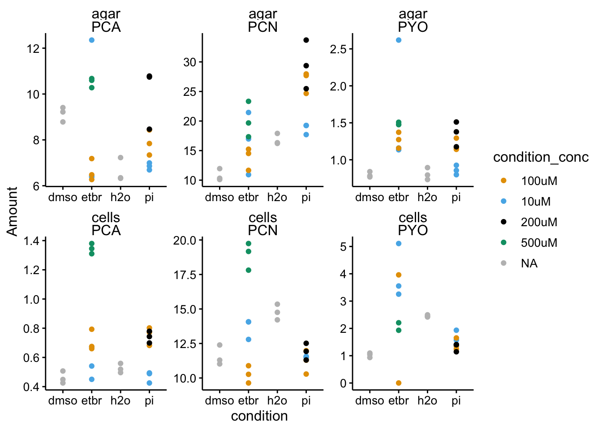
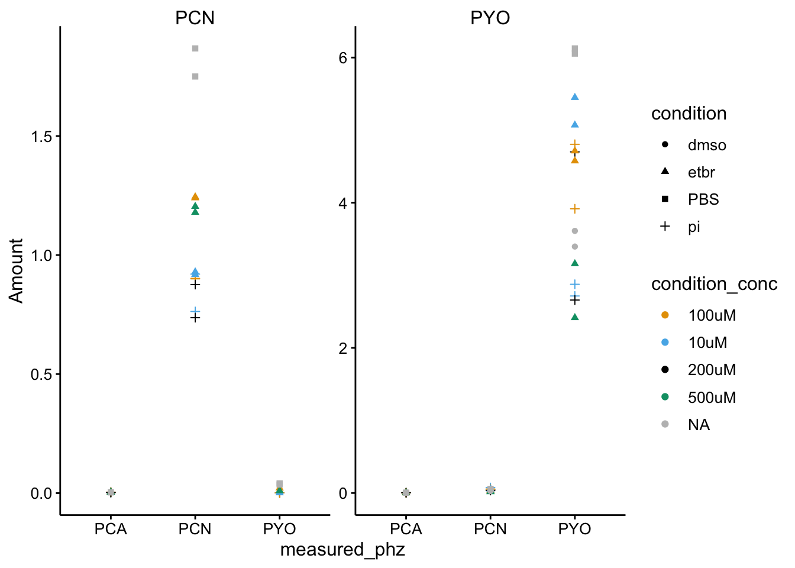
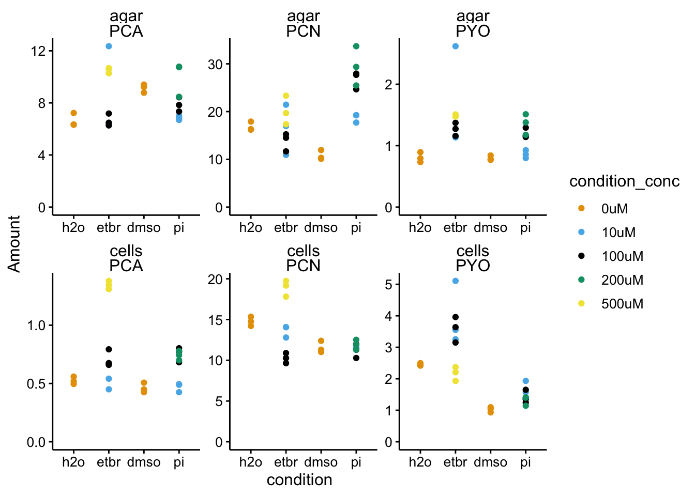
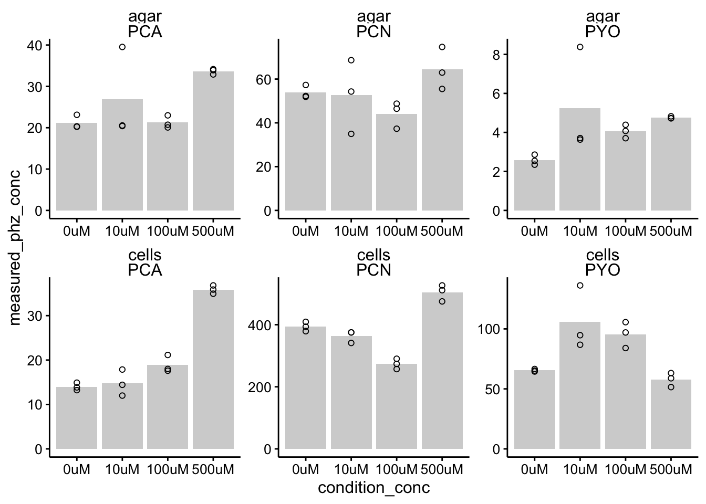
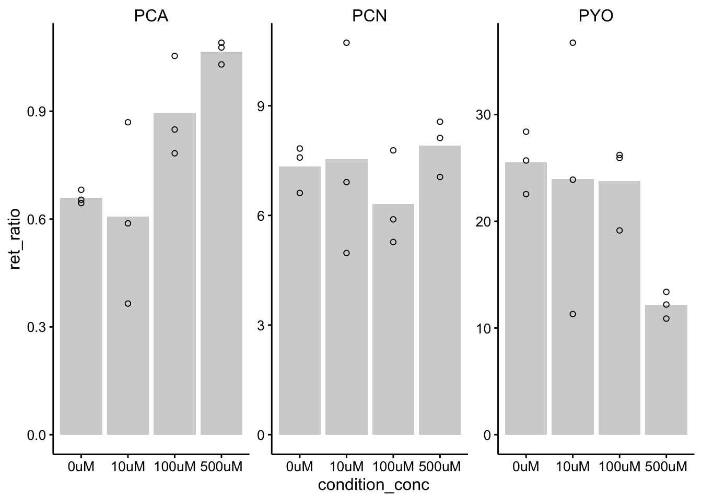
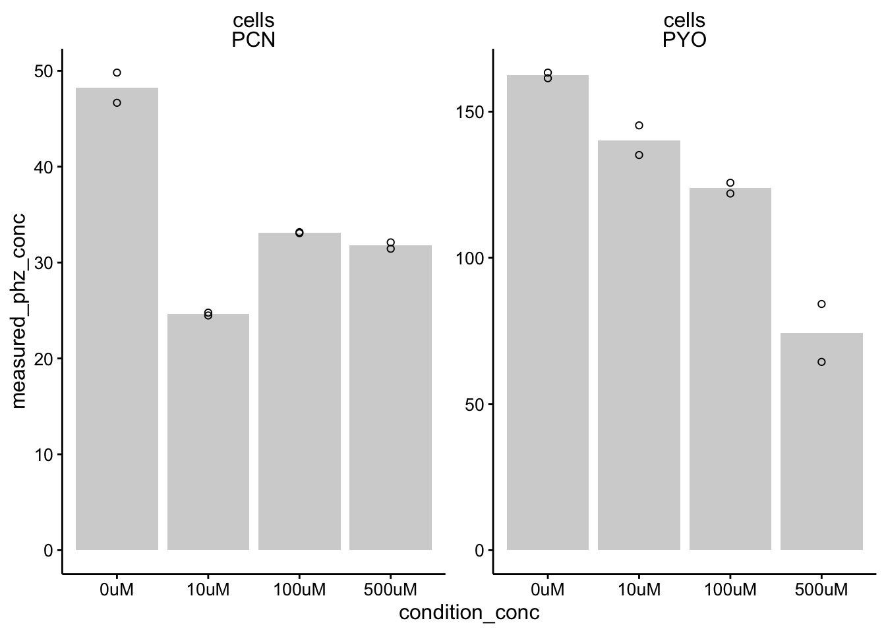
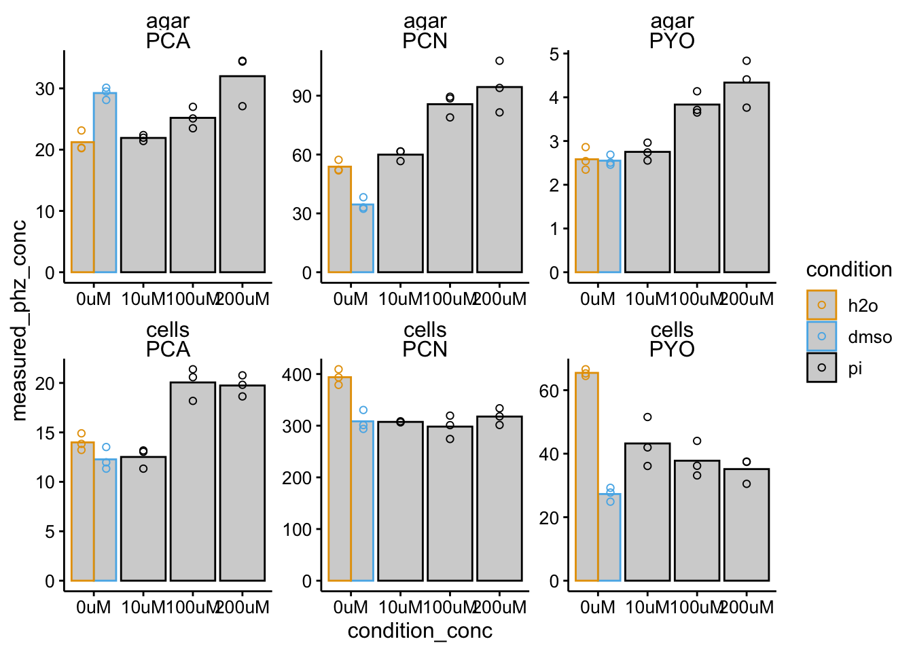
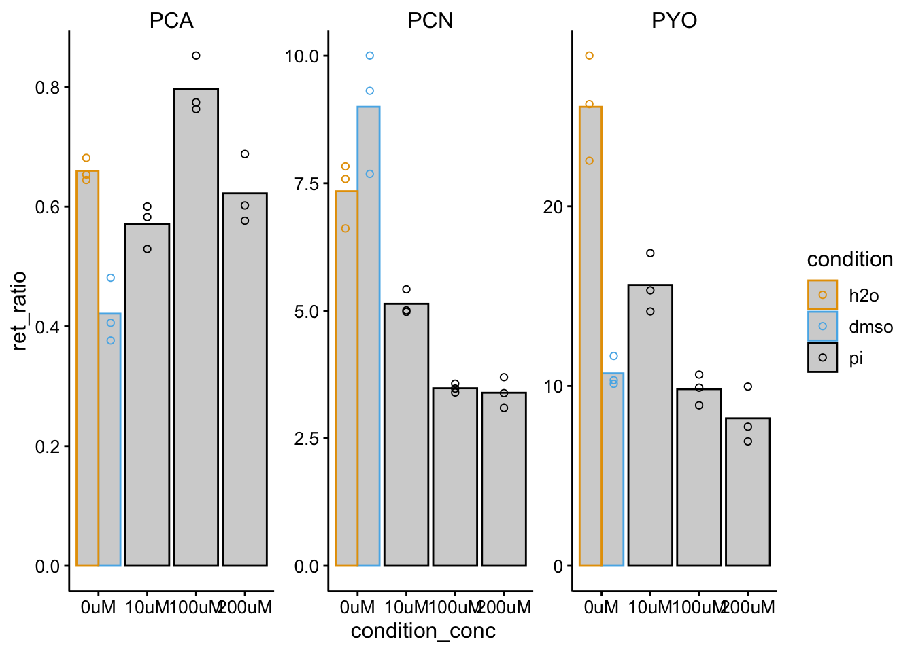
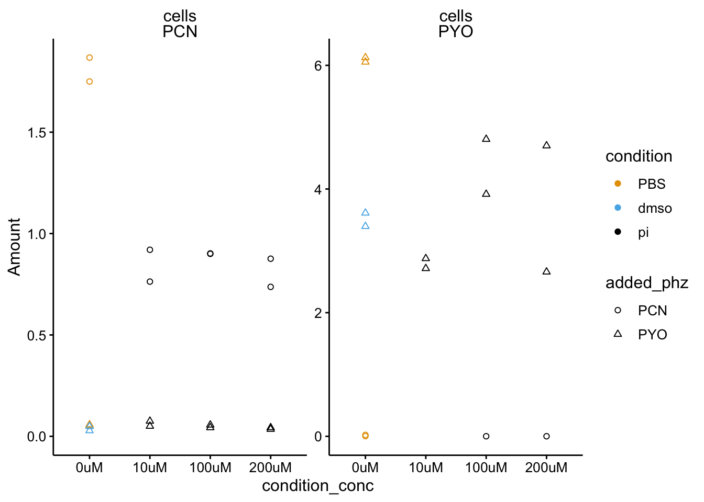
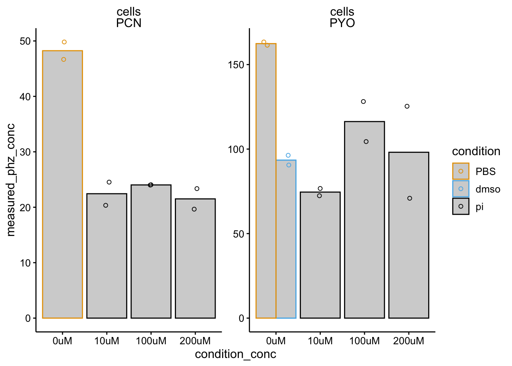

Propidium and Ethidium with Colony Biofilms
LC-MS Quantifications from exp 07-23-19
Scott Saunders
09-23-2019
library(tidyverse)
library(cowplot)
library(viridis)
library(knitr)
library(kableExtra)
knitr::opts_chunk$set(tidy.opts=list(width.cutoff=60),tidy=TRUE, echo = TRUE, message=FALSE, warning=FALSE, fig.align="center")
source("../../../../IDA/tools/plotting_tools.R")
theme_set(theme_1())Intro
adsf
Methods
Samples
Images are available in my google drive.
WT
WT colonies for TOTO measurement
- WT Toto - 6 biofilm, 6 agar
WT controls for EtBr
- WT H2O - 3 cells, 3 agar
WT controls for PI
- WT dmso - 3 cells, 3 agar
WT exp w/ EtBr
- WT EtBr 10uM - 3 cells, 3 agar
- WT EtBr 100uM - 3 cells, 3 agar
- WT EtBr 500uM - 3 cells, 3 agar
WT exp w/ PI
- WT PI 10uM - 3 cells, 3 agar
- WT PI 100uM - 3 cells, 3 agar
- WT PI 200uM - 3 cells, 3 agar
= 60 samples
∆phz*
∆phz* + PYO + EtBr
- ∆phz* + 50uM PYO + 10uM EtBr - 2 cells, 2 agar
- ∆phz* + 50uM PYO + 100uM EtBr - 2 cells, 2 agar
- ∆phz* + 50uM PYO + 500uM EtBr - 2 cells, 2 agar
∆phz* + PCN + EtBr
- ∆phz* + 50uM PCN + 10uM EtBr - 2 cells, 2 agar
- ∆phz* + 50uM PCN + 100uM EtBr - 2 cells, 2 agar
- ∆phz* + 50uM PCN + 500uM EtBr - 2 cells, 2 agar
∆phz* + PYO + PI
- ∆phz* + 50uM PYO + 10uM PI - 2 cells, 2 agar
- ∆phz* + 50uM PYO + 100uM PI - 2 cells, 2 agar
- ∆phz* + 50uM PYO + 200uM PI - 2 cells, 2 agar
∆phz* + PCN + PI
- ∆phz* + 50uM PCN + 10uM PI - 2 cells, 2 agar
- ∆phz* + 50uM PCN + 100uM PI - 2 cells, 2 agar
- ∆phz* + 50uM PCN + 200uM PI - 2 cells, 2 agar
= 48 samples
= 108 samples total
First run is WT H2O and WT WT EtBr Samples
Sample Prep
Samples were extracted as normal. Colonies were resuspended in 800uL of PBS 137(?? - check this) and agar was extracted for ~3 hours in 3mL of PBS 137. Note that some of the colonies did not break up entirely, particularly in the PI and EtBr treated colonies. However, they were all incubated in the liquid for the same amount of time, so I would expect that the phenazines were extracted reasonably well. Photos in the google drive show some of the prep and differences in colony pellets etc.
Frozen samples were thawed to room temp, then filtered with 0.2um spinX columns. 500uL of samples were then transferred into sample vials containing 500uL of PBS 137 and therefore samples were run at a 0.5 x dilution.
Samples were run using the standard Phenazine_basic_MS method on the waters LC-MS.
Results
First pass
Here are the results from the first quantification. Let’s read in the data:
df_wt <- read_csv("../data/2019_07_23_colony_HPLC_wt_data.csv")
df_dphz <- read_csv("../data/2019_07_23_colony_HPLC_dPHZ_data.csv")Here’s the raw WT data:
colorblind_palette <- c("#E69F00", "#56B4E9", "#000000", "#009E73",
"#F0E442", "#0072B2", "#D55E00", "#CC79A7")
ggplot(df_wt %>% filter(condition != "blank"), aes(x = condition,
y = Amount, color = condition_conc)) + geom_point() + facet_wrap(material ~
measured_phz, scales = "free") + scale_color_manual(values = colorblind_palette,
na.value = "gray")
The only thing that caught my eye here is the PYO measured in the 100uM etbr cells. You can see one value is at zero, while the other is at 4. That seems like a mistake to me - may need to requantify.
Here’s the raw ∆phz* data:
ggplot(df_dphz %>% filter(condition != "blank"), aes(x = measured_phz,
y = Amount, color = condition_conc, shape = condition)) +
geom_point() + facet_wrap(~added_phz, scales = "free") +
scale_color_manual(values = colorblind_palette, na.value = "gray") This looks pretty good to me. Let’s go back and look at the WT sample that seemed to be a false negative.
Second pass
After looking at the run the PYO peaks are closer to 6.1 min retention time instead of 6.0, so the integration algorithm missed that one peak. I figured it might have missed others, but done it in a more consistent way across samples, so I just requantified everything looking for the PYO peak near 6.1min. Here’s the second quantification of the data:
df_wt_2 <- read_csv("../data/2019_07_23_colony_HPLC_wt_data_2.csv")
df_wt_2 <- df_wt_2 %>% mutate(condition_conc = fct_relevel(condition_conc,
c("0uM", "10uM", "100uM", "200uM", "500uM"))) %>% mutate(condition = fct_relevel(condition,
c("h2o", "etbr", "dmso", "pi")))
df_dphz_2 <- read_csv("../data/2019_07_23_colony_HPLC_dPHZ_data_2.csv")
df_dphz_2 <- df_dphz_2 %>% mutate(condition_conc = fct_relevel(condition_conc,
c("0uM", "10uM", "100uM", "200uM", "500uM"))) %>% mutate(condition = fct_relevel(condition,
c("PBS", "etbr", "dmso", "pi")))ggplot(df_wt_2 %>% filter(condition != "blank"), aes(x = condition,
y = Amount, color = condition_conc)) + geom_point() + facet_wrap(material ~
measured_phz, scales = "free") + ylim(0, NA)
ggplot(df_dphz_2 %>% filter(condition != "blank"), aes(x = condition,
y = Amount, color = condition_conc)) + geom_point() + facet_wrap(added_phz ~
measured_phz, scales = "free") + ylim(0, NA) Focus on the PCN - PCN and PYO - PYO panels, since those are the only values that are real. The other panels just show that indeed we don’t detect significant amounts of other phenazines when they are not added to ∆phz*.
Focus on the PCN - PCN and PYO - PYO panels, since those are the only values that are real. The other panels just show that indeed we don’t detect significant amounts of other phenazines when they are not added to ∆phz*.
Ok, looks good, so now I’ll go ahead and convert the values into biofilm and agar concentrations and retention ratios.
df_wt_conc <- df_wt_2 %>% mutate(measured_phz_conc = case_when(material ==
"cells" ~ (Amount * 2) * (800/60), material == "agar" ~ (Amount *
2) * (8/5))) %>% group_by(measured_phz, strain, condition,
condition_conc, material) %>% mutate(mean_phz_conc = mean(measured_phz_conc))
df_wt_retRatio <- left_join(df_wt_conc %>% filter(material ==
"cells"), df_wt_conc %>% filter(material == "agar"), by = c("measured_phz",
"strain", "condition", "condition_conc", "rep"), suffix = c("_cells",
"_agar")) %>% mutate(ret_ratio = measured_phz_conc_cells/measured_phz_conc_agar) %>%
group_by(measured_phz, strain, condition, condition_conc) %>%
mutate(mean_ret_ratio = mean(ret_ratio))
df_dphz_conc <- df_dphz_2 %>% filter(added_phz == measured_phz) %>%
mutate(measured_phz_conc = case_when(material == "cells" ~
(Amount * 2) * (800/60), material == "agar" ~ (Amount *
2) * (8/5))) %>% group_by(measured_phz, strain, condition,
condition_conc) %>% mutate(mean_phz_conc = mean(measured_phz_conc))EtBr
WT
ggplot(df_wt_conc %>% filter(condition %in% c("etbr", "h2o")),
aes(x = condition_conc, y = measured_phz_conc)) + geom_col(data = df_wt_conc %>%
filter(condition %in% c("etbr", "h2o")) %>% filter(rep ==
1), aes(x = condition_conc, y = mean_phz_conc), fill = "light gray") +
geom_point(shape = 21) + facet_wrap(material ~ measured_phz,
scales = "free") + ylim(0, NA)
ggplot(df_wt_retRatio %>% filter(condition %in% c("etbr", "h2o")),
aes(x = condition_conc, y = ret_ratio)) + geom_col(data = df_wt_retRatio %>%
filter(condition %in% c("etbr", "h2o")) %>% filter(rep ==
1), aes(x = condition_conc, y = mean_ret_ratio), fill = "light gray") +
geom_point(shape = 21) + facet_wrap(~measured_phz, scales = "free") +
ylim(0, NA)
∆phz*
ggplot(df_dphz_conc %>% filter(condition %in% c("etbr", "PBS")),
aes(x = condition_conc, y = measured_phz_conc)) + geom_col(data = df_dphz_conc %>%
filter(condition %in% c("etbr", "PBS") & rep == 1), aes(x = condition_conc,
y = mean_phz_conc), fill = "light gray") + geom_point(shape = 21) +
facet_wrap(material ~ measured_phz, scales = "free") + ylim(0,
NA)
PI
WT
ggplot(df_wt_conc %>% filter(condition %in% c("pi", "h2o", "dmso")),
aes(x = condition_conc, y = measured_phz_conc, color = condition)) +
geom_col(data = df_wt_conc %>% filter(condition %in% c("pi",
"h2o", "dmso") & rep == 1), aes(x = condition_conc, y = mean_phz_conc),
fill = "light gray", position = "dodge") + geom_point(shape = 21,
position = position_dodge(width = 1)) + facet_wrap(material ~
measured_phz, scales = "free") + ylim(0, NA)
ggplot(df_wt_retRatio %>% filter(condition %in% c("pi", "h2o",
"dmso")), aes(x = condition_conc, y = ret_ratio, color = condition)) +
geom_col(data = . %>% filter(rep == 1), aes(y = mean_ret_ratio),
fill = "light gray", position = "dodge") + geom_point(shape = 21,
position = position_dodge(width = 1)) + facet_wrap(~measured_phz,
scales = "free") + ylim(0, NA)
∆phz*
ggplot(df_dphz_2 %>% filter(condition %in% c("pi", "PBS", "dmso") &
measured_phz != "PCA"), aes(x = condition_conc, y = Amount,
shape = added_phz, color = condition)) + geom_point() + facet_wrap(material ~
measured_phz, scales = "free") + ylim(0, NA) + scale_shape_discrete(solid = F)
ggplot(df_dphz_conc %>% filter(condition %in% c("pi", "PBS",
"dmso")), aes(x = condition_conc, y = measured_phz_conc,
color = condition)) + geom_col(data = . %>% filter(rep ==
1), aes(y = mean_phz_conc), fill = "light gray", position = "dodge") +
geom_jitter(shape = 21, position = position_jitterdodge(dodge.width = 1)) +
facet_wrap(material ~ measured_phz, scales = "free") + ylim(0,
NA)
Discussion
One issue here is colony size. We should look back at this. Another issue seems to be that DMSO strongly affects both WT and dPHZ retention.
sessionInfo()## R version 3.5.3 (2019-03-11)
## Platform: x86_64-apple-darwin15.6.0 (64-bit)
## Running under: macOS Mojave 10.14.6
##
## Matrix products: default
## BLAS: /Library/Frameworks/R.framework/Versions/3.5/Resources/lib/libRblas.0.dylib
## LAPACK: /Library/Frameworks/R.framework/Versions/3.5/Resources/lib/libRlapack.dylib
##
## locale:
## [1] en_US.UTF-8/en_US.UTF-8/en_US.UTF-8/C/en_US.UTF-8/en_US.UTF-8
##
## attached base packages:
## [1] stats graphics grDevices utils datasets methods base
##
## other attached packages:
## [1] kableExtra_1.1.0 knitr_1.23 viridis_0.5.1
## [4] viridisLite_0.3.0 cowplot_0.9.4 forcats_0.4.0
## [7] stringr_1.4.0 dplyr_0.8.1 purrr_0.3.2
## [10] readr_1.3.1 tidyr_0.8.3 tibble_2.1.3
## [13] ggplot2_3.2.0 tidyverse_1.2.1
##
## loaded via a namespace (and not attached):
## [1] tidyselect_0.2.5 xfun_0.7 haven_2.1.0 lattice_0.20-38
## [5] colorspace_1.4-1 generics_0.0.2 htmltools_0.3.6 yaml_2.2.0
## [9] rlang_0.3.4 pillar_1.4.1 glue_1.3.1 withr_2.1.2
## [13] modelr_0.1.4 readxl_1.3.1 munsell_0.5.0 gtable_0.3.0
## [17] cellranger_1.1.0 rvest_0.3.4 evaluate_0.14 labeling_0.3
## [21] broom_0.5.2 Rcpp_1.0.1 scales_1.0.0 backports_1.1.4
## [25] formatR_1.7 webshot_0.5.1 jsonlite_1.6 gridExtra_2.3
## [29] hms_0.4.2 digest_0.6.19 stringi_1.4.3 grid_3.5.3
## [33] cli_1.1.0 tools_3.5.3 magrittr_1.5 lazyeval_0.2.2
## [37] crayon_1.3.4 pkgconfig_2.0.2 xml2_1.2.0 lubridate_1.7.4
## [41] assertthat_0.2.1 rmarkdown_1.13 httr_1.4.0 rstudioapi_0.10
## [45] R6_2.4.0 nlme_3.1-137 compiler_3.5.3